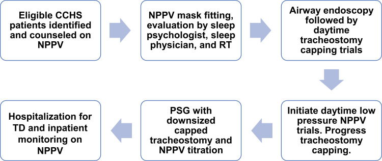
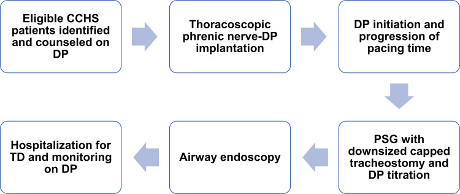

3118 — Cai ống mở khí quản ở trẻ CCHS: chuyển sang NPPV hay kích thích cơ hoành?
Tags: pattern:phu-thuoc-thong-khi pattern:giam-thong-khi-trung-uong vung:duong-tho-nhi vung:than-nao vung:co-hoanh anatomy:co-hoanh protocol:PSG protocol:chup-hoanh protocol:noi-soi-duong-tho score:AASM-hypoventilation
Mức chắc chắn (certainty): tổng hợp y văn (literature synthesis) — ghép thuật toán cai ống sang NPPV và sang kích thích cơ hoành (Kasi AS và cs., J Multidiscip Healthc 2022, PMC8963195), đoàn hệ 30 trẻ theo dõi 25 năm (Fain ME và cs., Clin Med Insights Pediatr 2023, PMC10226304), đoàn hệ 23 trẻ đặt máy kích thích cơ hoành (Tsolakis N và cs., Acta Paediatr 2022, PMC9305551), đoàn hệ 22 trẻ của một trung tâm (Porcaro F và cs., Front Pediatr 2021, PMC8039127) và hướng dẫn CCHS 2020 (Trang H và cs., Orphanet J Rare Dis 2020, PMC7503443). Không có ca do nhóm tự chụp.
Câu hỏi thực hành: trẻ CCHS 8 tuổi, đang thở máy qua ống mở khí quản, chỉ cần hỗ trợ khi ngủ, ban ngày tự thở và đi học bình thường. Gia đình hỏi: "Bỏ ống được chưa, và bỏ thì thở bằng gì?" Câu trả lời không phải "rút ống rồi xem sao" — mà là chứng minh bằng PSG rằng trẻ chỉ cần thông khí khi ngủ, rồi chọn mặt nạ (NPPV) hay máy kích thích cơ hoành (diaphragm pacing, DP), và chỉ rút ống khi đã chuẩn độ xong phương án thay thế.
1. Tổng quan bệnh học – cơ chế hình ảnh: vì sao "cai ống" ở CCHS là bài toán đo lường, không phải bài toán đường thở
- Bản chất: CCHS là giảm thông khí trung ương bẩm sinh do đột biến PHOX2B — trẻ không "cảm" được CO₂ tăng và O₂ giảm, nên không có dấu hiệu khó thở (không thở nhanh, không co kéo). Vì vậy mọi quyết định cai ống phải dựa trên đo khách quan (PSG có CO₂, EtCO₂ qua đêm), không dựa vào vẻ ngoài của trẻ.
- Vì sao không thể suy từ "ban ngày trẻ tỉnh táo": giảm thông khí nặng nhất ở ngủ NREM, khi điều khiển tự động theo CO₂ chiếm gần như toàn bộ. Ban ngày bình thường không dự báo đêm an toàn.
- Vì sao X-quang/CT vẫn cần trước khi cai ống: cai ống thất bại vì đường thở (u hạt, sụp trên lỗ mở, hẹp dưới thanh môn) khác hoàn toàn với thất bại vì trung tâm hô hấp. Phải loại trừ nguyên nhân cơ học trước, nếu không sẽ quy sai cho "bệnh CCHS nặng lên" và bỏ sót tổn thương chữa được (xem 6100).
- Vì sao DP gây tắc nghẽn đường thở trên (OSA): DP co cơ hoành theo nhịp máy, nhưng không đồng bộ với cơ mở hầu (genioglossus, cơ khẩu cái). Khi cơ hoành kéo xuống tạo áp lực âm, hầu sụp nếu cơ mở hầu chưa kịp co — trẻ nhỏ càng nhạy vì đường thở mềm, tuân thủ cao. Đây là lý do PSG chuẩn độ DP phải trả lời cả thông khí và OSA, và vì sao đôi khi giảm biên độ DP lại cải thiện OSA.
- Vì sao DP bị giới hạn giờ/ngày ở trẻ: cơ hoành là cơ vân — kích thích liên tục ở biên độ cao gây mỏi cơ (đường cong lực–tần số), biểu hiện thể tích khí lưu thông giảm dần trong ngày. Vì vậy trẻ dùng DP tối đa 12–14 giờ/ngày, khởi đầu 60–90 phút/ngày, tăng 30 phút/ngày mỗi tuần để "tập luyện hiếu khí" cho sợi cơ hoành.
- Vì sao béo phì làm DP thất bại: hệ thống truyền năng lượng qua da bằng sóng radio tới bộ nhận dưới da; mô mỡ dày làm suy hao tín hiệu và tăng trở kháng, nên béo phì là tiêu chí loại khi chọn DP.
- Vì sao đã đặt máy DP thì không chụp MRI: điện cực và bộ nhận cấy ghép là kim loại dẫn điện — trong từ trường MRI chúng hấp thụ năng lượng RF và nóng lên (hiệu ứng ăng-ten), nên MRI là chống chỉ định sau cấy DP; cần ghi rõ trong hồ sơ để không đặt lịch MRI nhầm.
- Ngưỡng và số liệu phải thuộc:
| Biến số | Số liệu | Nguồn |
|---|---|---|
| Mục tiêu thông khí khi dùng máy | SpO₂ ≥ 95%, EtCO₂ 35–40 mmHg | PMC8963195 |
| Trẻ đạt "chỉ cần thông khí khi ngủ" | 26/30 (87%), tuổi trung vị 9 tháng (IQR 6–14) | PMC10226304 |
| Cai ống thành công trong nhóm đó | 9/26 (35%), tuổi trung vị 11,2 năm (IQR 5,9–15,7) | PMC10226304 |
| Trước 2010 so với sau 2010 | 59% trẻ phải mở khí quản trong những tháng đầu ở đoàn hệ 22 trẻ; sau 2010 ưu tiên NIV, cai ống được 3 ca từng thở máy xâm nhập | PMC8039127 |
| Chuyển sang DP | 20/23 (87%) thành công; 3 tiếp tục NIV | PMC9305551 |
| Cai ống sau DP | 5/5 trẻ có ống đều cai được: 1 trong 3 tháng, 4 trong 3–6 tháng | PMC9305551 |
| Tuổi đặt DP | trung bình 9,1 năm (2,9–31,2); tuổi cai ống trung bình 6,2 năm (3,8–13,2) | PMC9305551 |
2. Mẫu hình + chẩn đoán phân biệt theo vị trí (gamut)
- Mẫu hình cốt lõi: trẻ đã có ống mở khí quản, thở máy ổn định, chỉ phụ thuộc máy khi ngủ, không bệnh phổi tiến triển — câu hỏi là "đường ra nào", không phải "có bệnh gì".
- Gamut theo tầng quyết định:
- Tầng trung tâm (CCHS, ROHHAD): chỉ cai được nếu chứng minh tự thở đủ khi thức và có phương án thay thế khi ngủ — không bao giờ "bỏ máy hoàn toàn".
- Tầng đường thở (thanh môn – dưới thanh môn – lỗ mở): u hạt, sụp trên lỗ mở, hẹp, rò khí–da — chữa được, phải xử lý trước khi tính chuyện cai.
- Tầng cơ hoành – dây hoành: liệt/mất chức năng hoành là chống chỉ định DP; cần chứng minh hoành còn co khi ngắt máy.
- Tầng hầu (OSA khi DP): hẹp mũi, amidan/VA to, béo phì — làm DP thất bại dù hoành tốt.
- Ba lựa chọn thay thế ống — không có lựa chọn "không hỗ trợ":
| Đường ra | Điều kiện chọn | Điểm mạnh | Điểm yếu |
|---|---|---|---|
| NPPV (mặt nạ/mũi) | Hợp tác, thường ≥ 6 tuổi, chỉ cần khi ngủ, bệnh ổn định | Không mổ, không kim loại cấy ghép, MRI vẫn làm được | Hở miệng/mặt nạ, hẹp mặt – lệch khớp cắn, loét da, tụt mặt nạ là nguy hiểm |
| DP (kích thích dây hoành) | ≥ 4 tuổi, chỉ cần khi ngủ, phổi lành, không béo, hoành còn chức năng | Không dây máy, đi học/vận động tốt, có ca dùng 30 năm không phải thay điện cực | Mổ lồng ngực, OSA, giới hạn 12–14 giờ/ngày, chống chỉ định MRI |
| PPV-T (giữ ống) | Không đủ điều kiện hai phương án trên | An toàn, quen thuộc | Nhiễm trùng, u hạt, tắc ống, rơi ống, chậm nói |
3. Bảng so sánh phân biệt (ma trận đối chiếu)
| Thực thể (entity) | Hình ảnh / thăm dò điển hình | Chốt vào (rule-in) | Chốt loại (rule-out) | Gợi ý xác nhận |
|---|---|---|---|---|
| Đủ điều kiện cai ống sang NPPV | PSG khi bịt ống + hạ cỡ ống, chuẩn độ NPPV bằng mặt nạ của trẻ | Bịt ống được cả ngày khi thức + PSG ban đêm đạt SpO₂/EtCO₂ mục tiêu | Còn u hạt/sụp/hẹp trên nội soi, hoặc không chịu mặt nạ | Nội soi đường thở + PSG chuẩn độ (Hình 1) |
| Đủ điều kiện cai ống sang DP | Huỳnh quang/siêu âm cơ hoành khi ngắt máy: hoành còn di động; X-quang ngực trước mổ | Hoành di động khi ngắt máy + ≥ 4 tuổi + chỉ cần khi ngủ + không béo | Hoành bất động (liệt hoành), béo phì, phổi bệnh nặng, không hợp tác | Soi huỳnh quang/siêu âm + PSG chuẩn độ DP (Hình 2) |
| Thất bại vì tầng trung tâm | PSG: PCO₂ > 50 mmHg trong > 25% thời gian ngủ dù đã chỉnh máy | CO₂ tăng khi ngủ dù đủ nhịp máy, không có tắc nghẽn | Tắc nghẽn đường thở trên (thấy dòng–thời gian dẹt, không phải giảm biên độ đều) | PSG có CO₂ + nội soi khi ngủ |
| Thất bại vì tầng đường thở | CT cổ–ngực ≤ 1 mm, nội soi ống mềm | U hạt/sụp/hẹp thấy được, hồi phục sau khi xử lý | Đường thở thông thoáng mọi thì | CT + nội soi (bài 6100) |
| OSA do DP | PSG: ngưng thở tắc nghẽn xuất hiện khi bật DP, giảm khi hạ biên độ DP | Ngưng thở tắc nghẽn chỉ khi DP + giảm khi chỉnh thông số | Ngưng thở trung ương (không có cố gắng thở) | PSG chuẩn độ DP; cân nhắc nạo VA/amidan + nội soi khi ngủ |
| Cần quay lại mở khí quản | Diễn tiến: OSA nặng không chỉnh được, hít sặc tái diễn, mặt nạ tụt ban đêm | Thất bại phương án thay thế dù đã chuẩn độ | Thất bại do kỹ thuật/thời điểm (chưa đủ 3 tháng DP) | Đánh giá lại toàn bộ + PSG |

Sáu bước: xác định trẻ đủ điều kiện → lắp mặt nạ và đánh giá bởi tâm lý giấc ngủ/bác sĩ giấc ngủ/kỹ thuật viên hô hấp → nội soi đường thở + bịt ống ban ngày → tập NPPV áp lực thấp ban ngày → PSG với ống hạ cỡ đã bịt + chuẩn độ NPPV → nhập viện rút ống và theo dõi trên NPPV. Nguồn: Kasi AS và cs., J Multidiscip Healthc 2022 (PMC8963195), Fig. 3 — CC BY-NC 3.0, nguyên bản.
Sáu bước: xác định trẻ đủ điều kiện → cấy điện cực lên dây hoành qua nội soi lồng ngực → khởi động và tăng dần thời gian DP → PSG với ống hạ cỡ đã bịt + chuẩn độ DP → nội soi đường thở → nhập viện rút ống và theo dõi trên DP. Nguồn: Kasi AS và cs., J Multidiscip Healthc 2022 (PMC8963195), Fig. 5 — CC BY-NC 3.0, nguyên bản.4. Protocol chụp/theo dõi + hệ phân độ và ngưỡng xử trí
- Bước 0 — loại trừ nguyên nhân cơ học: CT cổ–ngực xoắn ốc, lát ≤ 1 mm, không cản quang khi nghi hẹp/u hạt/sụp; nội soi ống mềm là chuẩn (xem bài 6100). Không đặt lịch cai ống khi chưa soi.
- Bước 1 — chứng minh "chỉ cần khi ngủ": sprint weaning ban ngày, 30–60 phút ngắt máy, theo dõi SpO₂ + EtCO₂; dung nạp thì tăng dần thời gian ban ngày. Luôn dùng máy khi ngủ trong giai đoạn này.
- Bước 2 — PSG là chuẩn tham chiếu: PSG với ống hạ cỡ đã bịt (NPPV) hoặc ống không bịt (DP), chuẩn độ trên chính mặt nạ/máy của trẻ; đọc cả thông khí (CO₂), tắc nghẽn (oAHI), oxy. Ngưỡng "chưa đạt": PCO₂ > 50 mmHg trong > 25% thời gian ngủ (AASM 2012, theo hướng dẫn 2020) hoặc EtCO₂ đỉnh cao kèm SpO₂ tụt.
- Bước 3 — trước DP, chứng minh hoành còn chức năng: soi huỳnh quang (sniff test) hoặc siêu âm cơ hoành khi ngắt máy thở — phải thấy cơ hoành di động; hoành bất động là chốt loại DP.
- Bước 4 — sau cấy DP: khởi động khoảng 4 tuần sau mổ (chờ liền vết mổ và ổn định mô quanh điện cực), khởi đầu 60–90 phút/ngày, tăng 30 phút/ngày mỗi tuần, tối đa 12–14 giờ/ngày ở trẻ.
- Bước 5 — rút ống: với DP, chỉ rút sau ≥ 3 tháng dùng DP qua đêm với ống không bịt và PSG chuẩn độ đạt; sau rút, PSG lại sau 3–6 tháng rồi hằng năm (NPPV cũng cần PSG hằng năm vì trẻ lớn lên).
- Theo dõi tại nhà: báo động mất kết nối mạch, áp lực cao/thấp, thể tích trên máy; SpO₂ có báo động; người chăm sóc được huấn luyện xử trí tụt mặt nạ — đây là tai biến chết người hay gặp nhất sau rút ống.
flowchart TD
A[Trẻ CCHS đang thở máy qua ống] --> B{Chỉ cần thông khí khi ngủ}
B -->|Không| C[Giữ PPV-T và tối ưu máy]
B -->|Có| D[Nội soi đường thở và CT lát mỏng]
D -->|Còn u hạt sụp hẹp| C
D -->|Thông thoáng| E[Sprint 30 đến 60 phút khi thức]
E -->|Không dung nạp| C
E -->|Dung nạp| F{Chọn đường ra}
F -->|Từ 6 tuổi và hợp tác| G[NPPV ban đêm và PSG chuẩn độ]
F -->|Từ 4 tuổi và hoành còn co| H[DP và PSG chuẩn độ]
G --> I[Rút ống theo dõi 24 đến 48 giờ]
H --> I
I --> J[PSG lại 3 đến 6 tháng và hằng năm]
5. Biến thể bình thường và cạm bẫy
- "SpO₂ 98% khi thở oxy" không loại trừ giảm thông khí: oxy bổ sung giữ SpO₂ cao trong khi CO₂ vẫn tăng — phải đọc EtCO₂/CO₂ qua da, không chỉ oximetry.
- PSG bình thường trên ống cỡ đầy đủ: ống lớn làm giảm sức cản và "che" hẹp trên lỗ mở; phải PSG với ống hạ cỡ đã bịt — nếu không, kết quả đẹp giả tạo và rút ống sẽ thất bại ngay đêm đầu.
- Cai ống "thành công" nhưng trẻ vẫn giảm thông khí ban ngày: một số trẻ CCHS có giảm thông khí cả khi thức; sprint 30–60 phút chỉ chứng minh được khoảng thời gian đó, không chứng minh cả ngày — cần theo dõi CO₂ ban ngày trước khi cho đi học không máy.
- Bỏ qua OSA sau DP: DP đạt thông khí nhưng tắc nghẽn hầu vẫn gây tụt SpO₂; giảm biên độ DP có thể cải thiện, nếu không phải xử lý amidan/VA hoặc trở lại ống.
- Rò khí–da sau rút ống: lỗ rò lớn làm yếu ho, ứ đọng, viêm phổi — không phải "chờ mãi sẽ đóng" (xem bài 6160 và 6100).
- Sai lầm hệ thống hay gặp nhất: coi "cai ống" là đích thay vì phương tiện. Với CCHS, đích là thông khí đủ suốt đời; nếu NPPV/DP không đạt, giữ ống là quyết định đúng, không phải thất bại.
6. Tự lượng giá — Blind Quiz ngay trên trang tĩnh
Ca 1 — Trẻ CCHS 7 tuổi, chỉ cần máy khi ngủ, ban ngày tự thở. Nhìn hình và cho biết bước nào quyết định rút ống.
- Gợi ý lâm sàng: trẻ hợp tác, đã bịt ống ban ngày được, gia đình muốn bỏ ống để đi học không vướng máy.
- Câu hỏi: Bước nào không thể bỏ qua trước khi rút ống? Vì sao phải hạ cỡ ống và bịt ống trước PSG?
Bấm để hiện đáp án
- Dấu hiệu (findings): thuật toán đòi nội soi đường thở + bịt ống ban ngày, rồi PSG với ống hạ cỡ đã bịt và chuẩn độ NPPV trên mặt nạ của trẻ, cuối cùng mới nhập viện rút ống.
- Chẩn đoán (diagnosis): đủ điều kiện cai ống sang NPPV — vì PSG trên ống cỡ đầy đủ che mất hẹp trên lỗ mở và không phản ánh đường thở thật khi đã rút.
- Nguồn ảnh: Kasi AS và cs., J Multidiscip Healthc 2022 (PMC8963195), Fig. 3 — CC BY-NC 3.0.
Ca 2 — Trẻ CCHS 5 tuổi, hoành còn di động, chỉ cần hỗ trợ khi ngủ. Gia đình chọn máy kích thích cơ hoành. Hỏi: vì sao không được rút ống ngay sau mổ?
- Gợi ý lâm sàng: trẻ vừa cấy điện cực lên dây hoành qua nội soi lồng ngực, vết mổ còn đau, chưa dùng DP.
- Câu hỏi: Mốc thời gian nào bắt buộc? Dấu hiệu nào trên PSG khiến chưa được rút ống dù DP đã chạy?
Bấm để hiện đáp án
- Dấu hiệu (findings): DP khởi động khoảng 4 tuần sau mổ, tăng dần 60–90 phút/ngày rồi +30 phút/ngày mỗi tuần; rút ống chỉ sau ≥ 3 tháng dùng DP qua đêm với ống không bịt và PSG chuẩn độ đạt.
- Chẩn đoán (diagnosis): chưa rút ống vì cơ hoành chưa được "huấn luyện" đủ và vì OSA do DP có thể xuất hiện — PSG còn ngưng thở tắc nghẽn hoặc CO₂ tăng là chống chỉ định rút.
- Nguồn ảnh: Kasi AS và cs., J Multidiscip Healthc 2022 (PMC8963195), Fig. 5 — CC BY-NC 3.0.
Bài liên quan chéo
- 3079 – Hội chứng ngưng thở trung ương bẩm sinh (CCHS)
- 6100 – Chăm sóc, biến chứng và cai ống mở khí quản ở trẻ
- 6109 – Trẻ thông khí không xâm nhập tại nhà quanh mổ
- 6123 – Rối loạn nuốt và hít sặc ở trẻ mở khí quản
- 6160 – Rối loạn nuốt sau cai ống mở khí quản ở trẻ
Ảnh
images/3118_cai-ong-mo-khi-quan_CCHS-PMC8963195-f3.jpg— thuật toán cai ống sang NPPV, Fig. 3, CC BY-NC 3.0, nguyên bản.images/3118_cai-ong-mo-khi-quan_CCHS-PMC8963195-f5.jpg— thuật toán cai ống sang DP, Fig. 5, CC BY-NC 3.0, nguyên bản.- Nguồn + giấy phép từng ảnh:
images/CREDITS.md.
Không dùng để chẩn đoán độc lập khi chưa có người hướng dẫn.